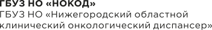

Время
провериться
Дорогие пациенты!
Компания Roche совместно c онкодиспансером Нижнего Новгорода запускает проект «Время провериться», предназначенный для своевременного выявления прогрессии рака мочевого пузыря (РМП). Проект предоставляет широкие возможности контроля онкологических заболеваний